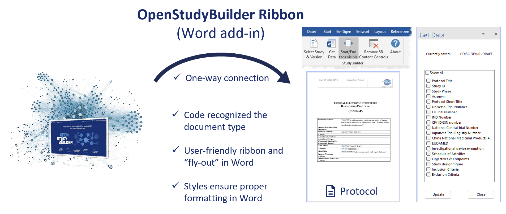

Word Add-In¶
(updated 2026-06-24)
Warning
The current version of the Word Add-In supports OpenStudyBuilder up to version 2.3 only. Support for newer OSB versions is work in progress. Check the GitHub repository for the latest release status.
The OpenStudyBuilder Word Add-In connects structured study information from OpenStudyBuilder with Microsoft Word protocol templates.
It enables automated population of predefined Word content controls using structured data retrieved via the OpenStudyBuilder API - reducing manual copy-paste, improving consistency, and aligning document output with system-based study definitions.

The Word Add-In adds a ribbon in Word that connects to OpenStudyBuilder and populates data fields into an open document. For example, it can populate the Schedule of Activities into a protocol template and refresh it as the study evolves.
Overview¶
The Word Add-In is a VSTO-based Microsoft Word extension that:
- Connects to an OpenStudyBuilder instance via API
- Authenticates via Microsoft Entra ID
- Allows selection of a study and version
- Inserts structured study data into prepared Word templates
- Supports repeated updates if protocol content changes
Supported data includes the Study ID, Schedule of Activities, in- and exclusion criteria, and other fields mapped to content control placeholders in the template.
Prerequisites¶
- Microsoft Word (tested with Office 365 and 2019)
- Access to an OpenStudyBuilder instance with Microsoft Entra ID credentials
- A prepared Word template (e.g.
ProtocolTemplate_OSB_1.1.docx) with content control placeholders and the custom document propertyStudyBuilderDocTypeset toInterventionalStudyProtocol
Installation¶
Two installation paths are available:
- Build from source - requires Visual Studio and a certificate (test or vendor). Configure your OpenStudyBuilder Entra settings, build the solution, and publish via the Publish Wizard to a network share, web server, or Azure App Service. See the README for full build instructions.
- Request a pre-compiled installer - contact openstudybuilder@gmail.com with the subject "Request access to Word-add-in installer". Note this uses a development certificate only.
Usage¶
- Open the prepared Word template in Microsoft Word
- Select the StudyBuilder ribbon
- Select the study and version to work with
- First time will trigger authentication via Microsoft Entra ID
- Click Get Data to view available updateable fields
- Click Update to populate the document with content from OpenStudyBuilder
- Toggle tag visibility as needed during editing or final review
- Use Remove Content Controls before finalising the document when no further updates are expected
The update process can be repeated at any time if the study definition changes. As long as the content controls are available, the content is refreshed with the information from OpenStudyBuilder. There are also properties set in the document to trace for example the study number, status and run date.
Repository¶
The source code and technical documentation are available in the official GitHub repository. For detailed technical information, installation instructions, and developer setup, refer to:
- README - build & deployment instructions
- Documentation - usage & template configuration details
Demonstration¶
The following video demonstration shows the key features and workflow of the OpenStudyBuilder Word Add-In in action: